- 00 开篇词 如何成为金融级人才？.md.html
- 01 业务初探：扫了二维码之后发生了什么？.md.html
- 02 原理解读：如何理解第三方支付的业务逻辑和系统组件？.md.html
- 03 产品大观：不同金融业务都有哪些技术实现要点？.md.html
- 04 领域驱动设计（上）：如何设计金融软件顶层架构？.md.html
- 05 领域驱动设计（下）：如何设计统一的金融业务模型？.md.html
- 06 计算输入的正确性：怎么选择正确时间的数据？.md.html
- 07 计算过程的正确性：如何设计正确的数据处理架构？.md.html
- 08 计算结果的正确性：怎么保证计算结果是正确的？.md.html
- 09 数据传输的质量：金融业务对数据传输有什么要求？.md.html
- 10 数据存储的合理性：金融业务可以不用关系型数据库吗？.md.html
- 11 系统优化：如何让金融系统运行得更快？.md.html
- 12 正确性分级（上）：单机无备份有哪几种不同的一致性？.md.html
- 13 正确性分级（中）：多机无容灾有哪几种不同的一致性实现？.md.html
- 14 正确性分级（下）：多机有容灾有哪几种不同的一致性？.md.html
- 15 分布式正确性的存在性（上）：什么情况下不存在分布式共识算法？.md.html
- 16 分布式一致性（下）：怎么理解最简单的分布式一致性算法？.md.html
- 17 正确性案例（上）：如何实现分布式的事件溯源架构？.md.html
- 18 正确性案例（中）：常见分布式数据方案的设计原理是什么？.md.html
- 19 正确性案例（下）：如何在运行时进行数据系统的动态分库？.md.html
- 20 容灾（上）如何实现正确的跨机房实时容灾？.md.html
- 21 容灾（下）：如何通过混沌工程提高系统稳定性？.md.html
- 春节策划第1期 分布式金融系统知识，你掌握了多少？.md.html
- 春节策划第2期 读书如抽丝，为你推荐一些我读过的好书.md.html
- 春节策划第3期 如何运用架构知识解读春运买票和手游案例？.md.html
- 答疑集锦（一） 思考题解析与外汇架构知识拓展.md.html
- 答疑集锦（三） 思考题解析与数据库底层实现.md.html
- 答疑集锦（二） 思考题解析与账务系统优化.md.html
- 结束语 金融之道，与你同行，虽远尤欣.md.html
- 捐赠
05 领域驱动设计（下）：如何设计统一的金融业务模型？
你好，我是任杰。这节课我想和你聊一聊怎么设计统一的金融模型。
上节课我带你了解了，如何通过领域驱动设计的方法来设计金融软件的顶层架构。我们知道了金融软件的核心原则之后，今天我们来学习实际的金融架构设计和建模，看看金融行业的一些通用的软件设计和分析方法。
这节课会涉及到一些英文专有名词。我用表格形式做了梳理，你可以在进入正文之前先了解一下：
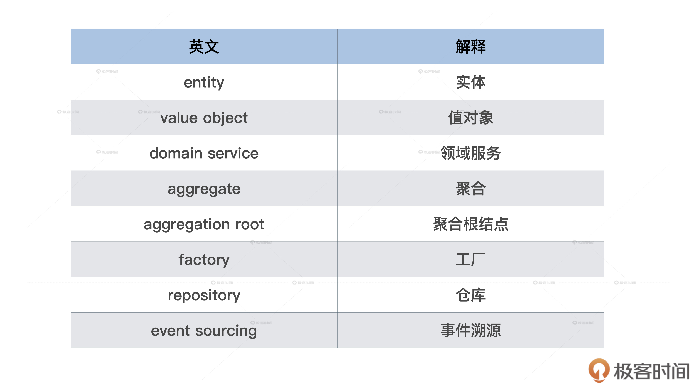
金融业务背景假设
在上节课我们说过领域驱动设计的过程非常耗时耗力，所以从性价比角度考虑的话，尽量只用这个方法来解决复杂金融业务的问题。
那么这节课，我要先选择一个既容易让你理解，又足够复杂的金融业务例子。
也许你还记得，我们在第3节课里给你说到了很多金融业务。其中交易类业务和场内交易业务都相对简单。所以我们如果想要找复杂的例子，就需要定位在场外交易的产品类型。场外交易最简单的类型就是期权（Option），所以我们可以选择债券期权（Bond Option）这个金融业务的例子。
正式分析系统架构之前，我们先来看看需要解决的金融业务细节。
债券期权本身也是一个期权（Option）。你购买了期权之后就有了一个选择的权利。在期权到期日那天，你可以选择用期权规定的价格来购买债券。
如果这时候期权价格比市场价低，你可以用低的期权价格来购买债券，同时以更高的价格卖出去，这样一买一卖就能马上获利。但是如果期权价格比市场价格高，你可以选择什么都不做，就当没有买过这个期权一样。
当然了，你也可以选择买了债券之后不卖出去。这时候你就拥有了这个债券。债券的发行人会定期给你利息，比如半年一次或者一年一次。
你可能已经发现了，期权给你的选择权力可以让你永赚不赔。金融行业都是聪明人，这么好的事情显然不可能是免费的。你需要花钱来买债券期权，所以债券期权本身是有价格的。
由于不知道未来债券价格会怎么波动，所以我们只能根据自己对各种未来概率的假设来估算债券期权的价格。这个估算的过程就是债券期权的定价过程。如果你认为的债券期权的真正价格比券商卖的要高，就可以从券商那里买入这个债券期权。
定价过程有两个最重要的输入，一个是债券的所有未来现金流，另一个是债券价格的历史数据。还有一些比较重要的数据，比如无风险利率和债券发行方的信用数据等，我们都归类于市场数据。
你如果在金融行业有一定经验，就会发现这里对业务做了很大的简化。比如我们举例的债券期权其实是叫看涨期权（Call Option），类似的还有看跌期权（Put Option）。只能在到期日行权的期权类型叫作欧式期权（European Option），类似的还有美式期权（American Option）。
这些简化是为了方便你理解，并不会影响后面架构分析的正确性。你如果对金融业务有兴趣，可以自行研究各种不同的场外金融业务。
例子选完了，接下来我们从建模逻辑和生命周期两个方面进行分析。
建模逻辑
实体（Entity）
在进行领域驱动设计建模的时候，首先要确认的是有哪些是实体。
实体是具有唯一标识符的业务对象。你可以用唯一标识符来区分不同的业务对象。如果你见过债券的话，会发现它和人民币很像，都是在角落里印上一串数字。这个就是债券的唯一标识符。
债券期权虽然是一个纯电子合同，但是它也有唯一标识。对开发人员来说，唯一标识符就是一串字符串，比如UUID。债券期权这个实体的示意图如下，图中“待补充”的内容后面我们会逐渐补全：
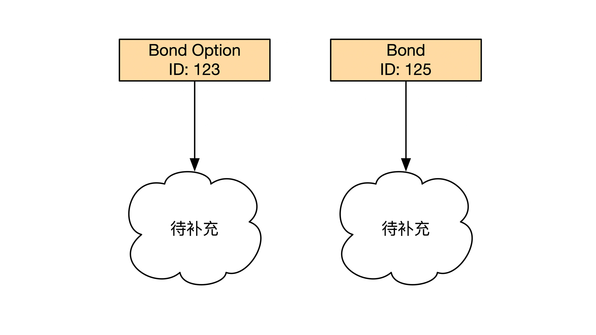
债券和债券期权这两个实体有一个共同点，它们都不会凭空产生和消失。它们都有一个日期叫作发行日期，这就是它们出现的一天。它们也有到期日期。
金融合同在发行日期和到期日期之间，还会规定一些其他的资金行为。我们把金融合同从产生到消失的整个过程叫作生命周期。另外，这个金融合同我们会通过唯一标识符进行管理。
说到这里我们总结一下，实体有这样三个特点：
1.有唯一标识符。- 2.用唯一标识符来判断是否是同一个实体。- 3.有生命周期管理。
反过来说，如果一个金融业务对象具有上面这三个特点，那么它很有可能被建模成实体。在这个债券期权的例子里，期权和债券都是实体。
期权对应了一个未来可能的资金流（Optional Cashflow），这个资金流会不会发生取决于你是否行权。这个可能的资金流也是实体。债券的资金流（Cashflow）相对来说比较确定，也是实体。债券现金流是由债券利息（Interest）构成的，这个利息也是实体。
我们把所有的实体和它们之间的引用关系画出来就是下面这张图：
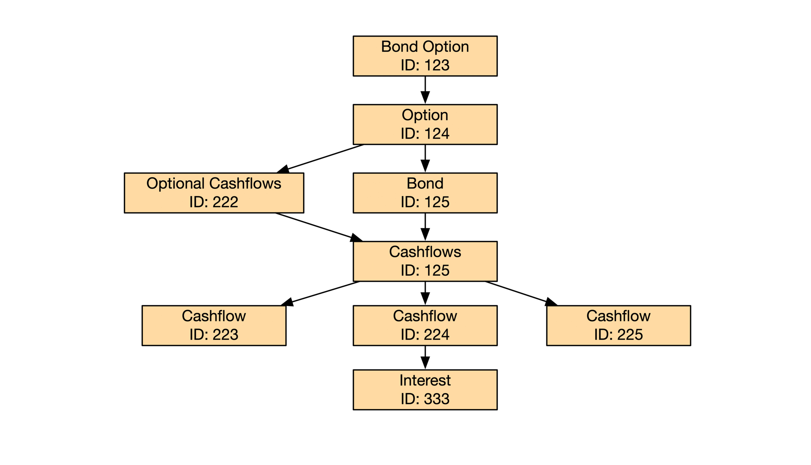
值对象（Value Object）
和实体对应的另一个概念是值对象（Value Object）。
顾名思义，值对象里的“对象”就是面向对象编程（OOP）里的对象（Object），“值”表示这个对象里只有值，没有其他东西。这么定义你可能感觉比较抽象，我们来看一个具体的值对象例子。
金融合同一定会规定合同涉及到的金额（Notional）。金额就是一个值对象。金额本身由币种（Currency）和数额（Amount）两个信息组成。
如果一个金额是100元人民币，而另一个金额也是100元人民币，我们会说这两个金额相等。
因为我们在判断金额是否相等的时候并没有用到任何唯一标识符，这说明了值对象并不是由唯一标识符决定的，而是由它内部的组成内容决定的。所以当我们判断两个值对象是否相等时，只能比较值对象内容。
前面讲的债券期权例子中也有几个值对象。前面提到的金额是一种。还有期权行权的日期和行权方式。我们再仔细分析的话，会发现行权日期里的日期也属于值对象。我们把值对象加上之后的示意图如下：
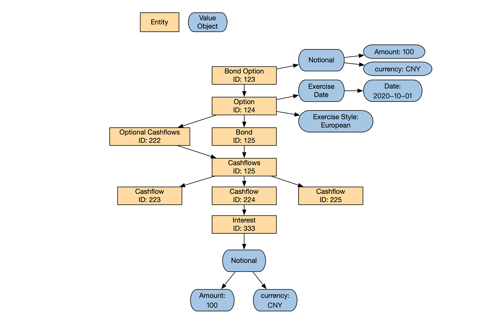
另外还有一些和债券期权没有直接关系的市场数据也是值对象，比如无风险市场利率。市场利率的示意图如下：
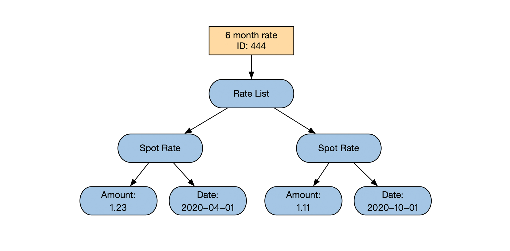
和实体相比，值对象还有一个不一样的地方，就是应该怎么正确修改值对象。比如说，债券利息原来的金额是100元人民币。现在想修改成200元人民币。那我们应该怎么实现呢？
我们在修改值对象之前要先找到值对象。你不能像对待实体一样，通过唯一标识符找到值对象。那应该如何访问它呢？
这就要说到值对象的另一个特点。值对象一定是作为实体的附属品存在的，值对象其实是实体的一个属性。你只能通过建模对象之间的引用关系顺藤摸瓜地找到值对象。我们通常会说一个对象具有状态（State），值对象是用来表示这些状态的。
找到值对象之后，接下来我们就可以来解决怎么修改值对象了。因为值对象没有唯一标识符，你一旦修改了值对象里的内容，这个值对象本身就会变得不一样，所以修改值对象的过程其实是替换值对象的过程。
领域驱动设计里，值对象的修改方法更极端。既然值对象的修改就是替换，那还不如将所有值对象的所有属性都设置成只读。这样既能满足值对象修改的要求，又能避免无意之中的修改。
这里我给你梳理一下，值对象有这些特点：
1.没有唯一标识符。- 2.有内部属性。- 3.通过比较内部属性来判断是否相等。- 4.不可修改。修改会返回新的值对象。- 5.不能独立存在，是其他实体或者值对象的附属品。
要重点提醒你的是，业务对象属于实体还是值对象并不是一成不变的。比如我们在数钱的时候，每张人民币纸钞都是一样的，人民币的纸钞可以作为值对象存在。但是如果我们想判定人民币真伪的时候，就需要检查人民币的编号，这时候会用到人民币的唯一标识符，人民币纸钞也就变成了实体。
所以这和上一节课核心领域和通用领域的区分标准一样，一个业务对象是属于实体还是值对象要取决于具体的问题，需要我们合理判断。
领域服务（Domain Service）
领域服务其实就是这个领域相关的服务。我们今天提到一个词叫业务逻辑。如果业务逻辑跨了多个实体，或者任何一个实体都不适合包含所有业务逻辑，那么用来承载业务逻辑的主体就是领域服务。
通俗来说，领域服务就是我们常说的业务逻辑，负责处理各种业务实体，也顺便通过实体来处理各种值对象。
金融行业的领域服务有一些独有的特性。首先，领域服务不附属于任何一个实体或者值对象。它自身独立存在。
其次，金融产品的领域服务有一个设计原则是无状态。无状态指的是它内部没有维护全局状态，整个计算过程也不能有任何随机性。请注意这是金融行业的设计原则，而不是所有行业都有这个要求。因为金融行业对正确性要求非常高，做任何计算都建议不要出现不确定性。这也是为什么金融系统架构普遍都是不可变架构（Immutable Architecture）。
总结一下，领域服务有这些特点：
- 代表业务逻辑，处理实体和值对象。
- 本身无状态。
- 不依附于任何实体或者值对象。
在债券期权的例子中，买卖合同时的定价（Pricing）过程是一个领域服务，合同的风险计算（Risk Calculation）也属于领域服务。我们把领域服务补全之后的示意图如下：
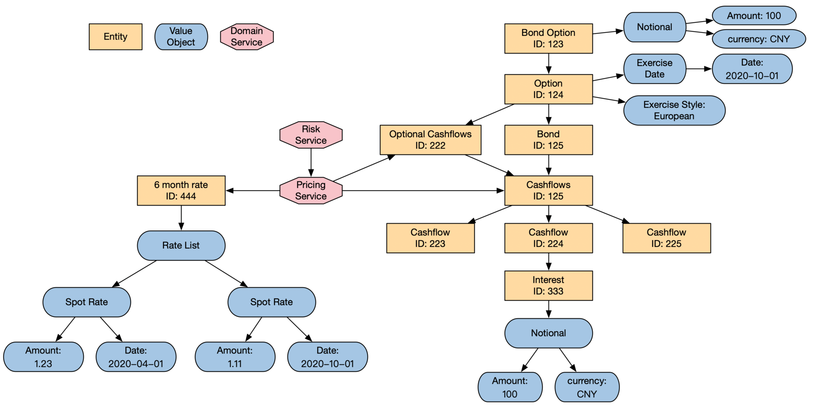
生命周期管理
聚合（Aggregate）
单个聚合
我们在前面说过实体是有生命周期的，我们需要对生命周期进行管理。
但是通常生命周期管理不是以单个实体为粒度进行管理的。你应该能从上面那些示意图里感受到实体之间存在着非常复杂的引用关系，彼此之间形成了一个引用关系图。如果你对引用关系图中的任何一个实体节点进行操作，势必会影响到周边的实体节点。
如果你不考虑这些被影响的周边实体节点，那么整个系统的状态会变得不一致。一个办法是对影响的范围做一个划分。这个划分就是聚合。从图论的角度来看，聚合就是一个有向图的子图。
聚合规定了一个影响范围的边界。它有一个唯一入口叫作聚合根（Aggregation Root）。聚合根一定是一个实体，通过它可以访问到所有跟它相关的其他实体或者值对象。
比如开头例子的债券期权（Bond Option），它就是一个聚合根。通过它可以访问到债券起源合同的其他内容。债券期权的聚合和聚合根示意图如下：
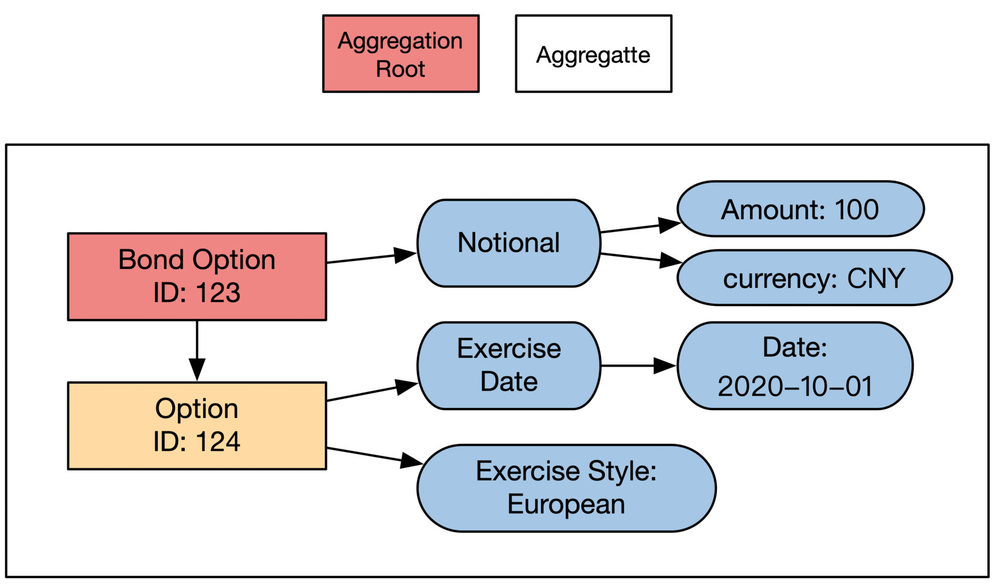
聚合除了定义影响力边界以外，还同时定义了存储边界。聚合里面所有内容需要在一个数据库事务内操作。
聚合的存取管理由我们这节课最后提到的仓库（Repository）来负责。读取的时候是先通过聚合根的唯一标识符来获取聚合根，然后再通过聚合根将聚合里剩下的内容从数据库拉出来。仓库在进行数据存取的时候需要合理选择数据解决方案，我会在第10节课里给你详细分析。
我们前面只提到了聚合的边界，但是没有说边界究竟有多大。其实大和小没有统一标准，需要具体情况具体分析。一般来说你要注意这3点：
1.聚合里节点的关系尽量形成有向无环图。
2.聚合的关系图尽量小一点。这样数据库事务小，存取速度快。
3.聚合的关系图如果太大的话，需要做一些优化。一般采用延时访问（Lazy Loading）的方法。当你访问聚合根的时候，系统并没有将所有内容从数据库加载进来，等访问到具体内容的时候才会加载。这样就能摊销数据加载时间，也可以节省不必要的数据库访问。
多个聚合
前面提到过，聚合是引用关系图的一个子图。当你把所有聚合划分好之后，会发现聚合之间也是存在引用关系的。比如一个聚合内部的实体节点可能需要访问另一个聚合内的节点。那多个聚合之间的访问应该遵守什么规则呢？
我们学习单个聚合时提过，只能通过聚合根来访问聚合内的元素。这个规定依然需要遵守。但是我们没有规定谁可以访问聚合根，所以一个聚合的内部节点也能访问另一个聚合的聚合根，甚至可以将聚合根的唯一标识符作为值对象存储下来。
我们还是拿债券期权这个金融产品举例，债券是期权的底层资产，因此期权这个实体需要能访问债券这个实体。体现在架构图上，就是在债券期权这个聚合内部，有节点可以访问债券这个聚合根。示意图如下：
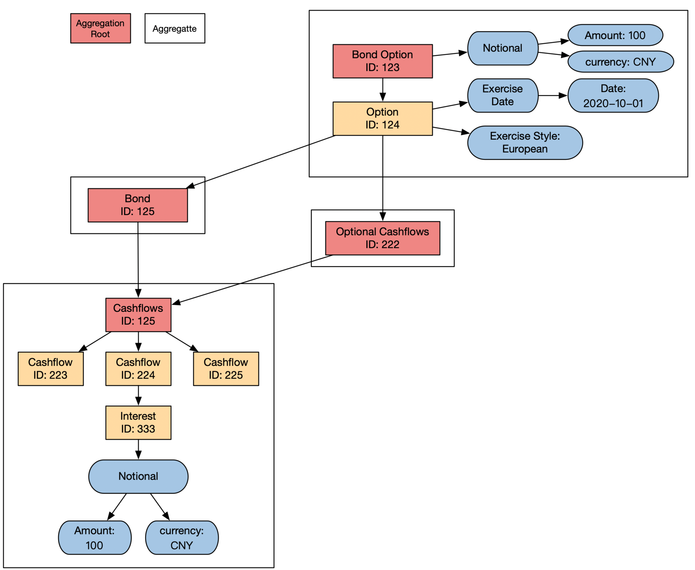
讲完了多个聚合的访问原则，我们再来看看多个聚合怎么处理存储。前面说过，单个聚合的存储需要在一个数据库事务内处理，这样多个事务的存储就会跨不同事务，情况会更加复杂。
我们可以选择用一个更大的事务来包含所有单个聚合的事务。但这样会导致事务范围过大，存储内容的范围不确定，存储的效率偏低。所以在实践中一般会放弃用数据库事务来存储多个聚合。
这时候的存储原则是最终一致性，只要最终所有聚合都能被正确存储就行，不需要在存储的中间过程中满足数据库事务的ACID要求。因为最终一致性会导致系统在存储的中途出现不一致的状态，所以在做架构设计时，我们要提前考虑这些情况应该如何处理，具体怎么处理我在后面第13节和14节课会讲到。
聚合的内容到这里就讲完了。下图展示了完整的聚合划分结果：- 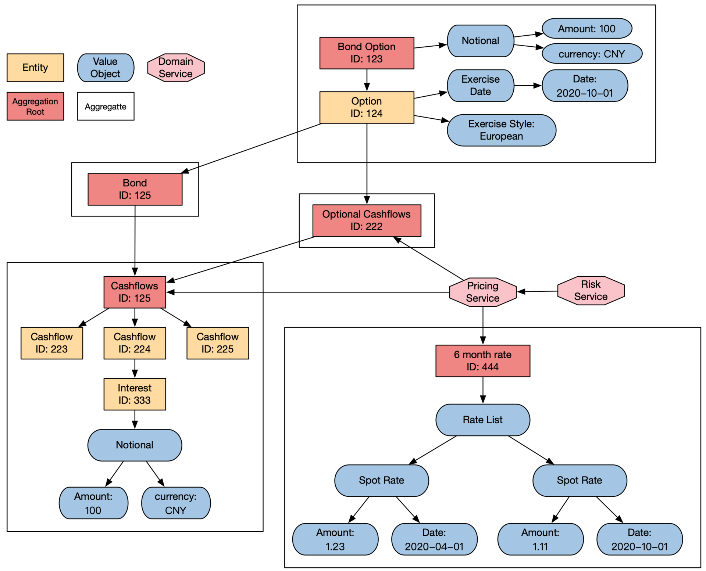
工厂（Factory）
领域驱动设计将业务对象的创建与使用分开。业务对象的使用由领域服务来负责，而创建由工厂来负责。
因为领域驱动设计里的工厂（Factory）和设计模式里的工厂作用完全一样，你可以查看设计模式相关内容，比如《设计模式：可复用面向对象软件的基础》，或者《深入浅出设计模式》。
仓库（Repository）
仓库负责所有业务对象的存储。领域驱动设计对存储也有一些独到的建议，我们下面就来看看。
仓库和现在基于服务的架构（SOA，Service Oriented Architecture）里的数据访问层（DAL，Data Access Layer）层很像，主要解决内存数据的序列化问题。但是从领域驱动设计的角度来看，仓库其实起到的是一个防腐化层（Anti-corruption Layer）的作用。
防腐化层也是领域驱动设计里的一个术语，它解决了两个系统在协议变更之后如何进行交互的问题。一般防腐化层会介于新老两个系统中间，它负责将老系统和老协议包装成一个使用新协议的系统，这样新的系统无论怎么变化，老系统都会安然无事。
所以防腐化指的是不让外部协议的变化来入侵内部协议。由于变化入侵通常会让系统架构变得更差，入侵的过程就是腐化的过程。
仓库也能防腐化，它分隔了数据的使用和存储，这样数据使用的变化就不会影响到数据存储。如下图所示，左边是防腐化层的示意图，右边是仓库的示意图：
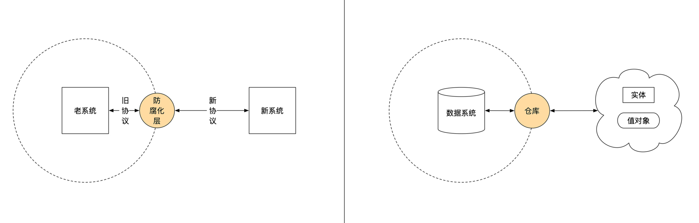
由于仓库负责业务对象的存储，我们自然会想到用仓库来做数据分析。不过，我不建议你使用仓库来做数据分析。领域驱动设计里有专门的事件溯源和CQRS来解决数据分析问题。我会在后面几节课给你详细讲解。
小结
这节课我给你讲了怎么设计统一的金融模型，具体要从建模逻辑和生命周期两个方面来看。
建模逻辑分为三个大的方向：实体、值对象和领域服务。
实体是有唯一标识的业务实体，有生命周期，有状态，有业务逻辑。相对而言，值对象没有唯一标识符，是通过自己内部属性来判断是否和其他人一样。它没有生命周期，通常是作为实体的属性或者状态存在。领域服务只包含业务逻辑，不包含任何状态。它通过操作实体和值对象来实现最终的功能。
而生命周期管理也分为三个大的方向：聚合、工厂和仓库。
聚合将紧密相关的实体和值对象组合成一个原子单元。外界只能直接访问这个原子单元的根结点，不能直接访问内部节点。这个原子单元的存取需要通过数据库事务来保证数据的完整性和一致性。工厂负责生成聚合。仓库负责将聚合序列化和反序列化。
领域驱动设计的建模过程会指导你深入思考金融业务涉及的对象和它们的逻辑，这样有利于划分系统组件边界和区分组件的重要性。而领域驱动设计对生命周期管理的一些思考，能帮助你从时间维度思考合理的金融对象管理方式。
所以有了领域驱动设计的指导，你设计出来的系统不仅仅现在是合理的，在将来也可能是合理的，这样就能增加金融系统演进的正确性。正确性是金融系统最重要的要求。
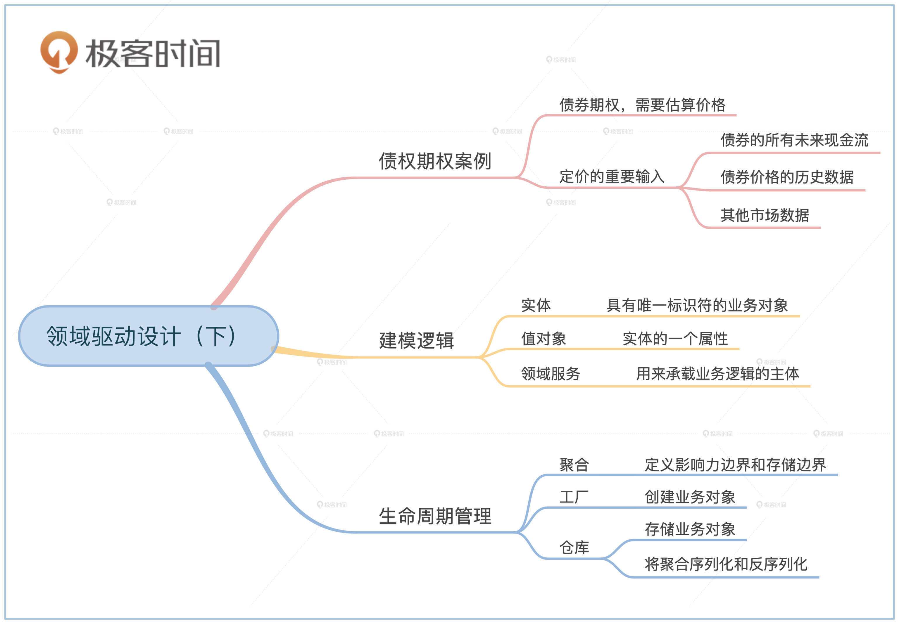
思考题
债券期权有一个行权日。实际经常会出现金融公司忘记了行权的情况。假设你需要实现一个自动通知的功能，如果债券期权没有行权，相关用户需要在第一时间收到相关通知。那你会怎么实现这个功能呢？是作为实体的内部逻辑，还是领域服务，或者是我们这节课还没有提到的其他数据分析方法？
欢迎留言和我分享你的想法。如果这节课让你有所收获，也欢迎你分享给朋友、同事，一起交流进步。
© 2019 - 2023 Liangliang Lee. Powered by gin and hexo-theme-book.